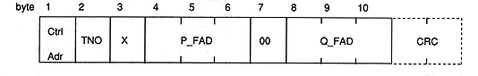
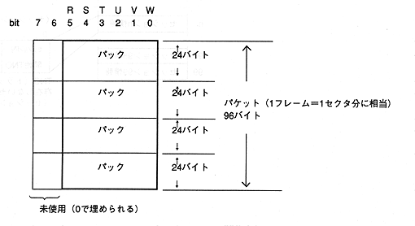

Title | Data | Data Name | No |
(a) When Adr = 1

Ctrl Adr: CONTROL / ADR byte TNO: Track number (binary value, not BCD) X: Index number (binary value, not BCD) P_FAD: Track time (frame address format with track head set to 0) Q_FAD: Absolute time (frame address format with 00:00:00 as 0)The contents in each status are the same as in the CD report. The following table shows the values for each TNO. (Lead-in and Lead-out can be acquired in multiple sessions)
TNO | X | P_FAD |
|---|---|---|
01H-63H (1-99) | 01H-63H | Track FAD in track |
AAH (Leadout) | 01H-63H | track In progress FAD |
00H (Lead-in) | 01H to 63H, A0H, A1H, A2H | 000000H |
(b) Other (ADR ≠ 1): The value of subcode Q as it is (10 bytes other than CRC)
